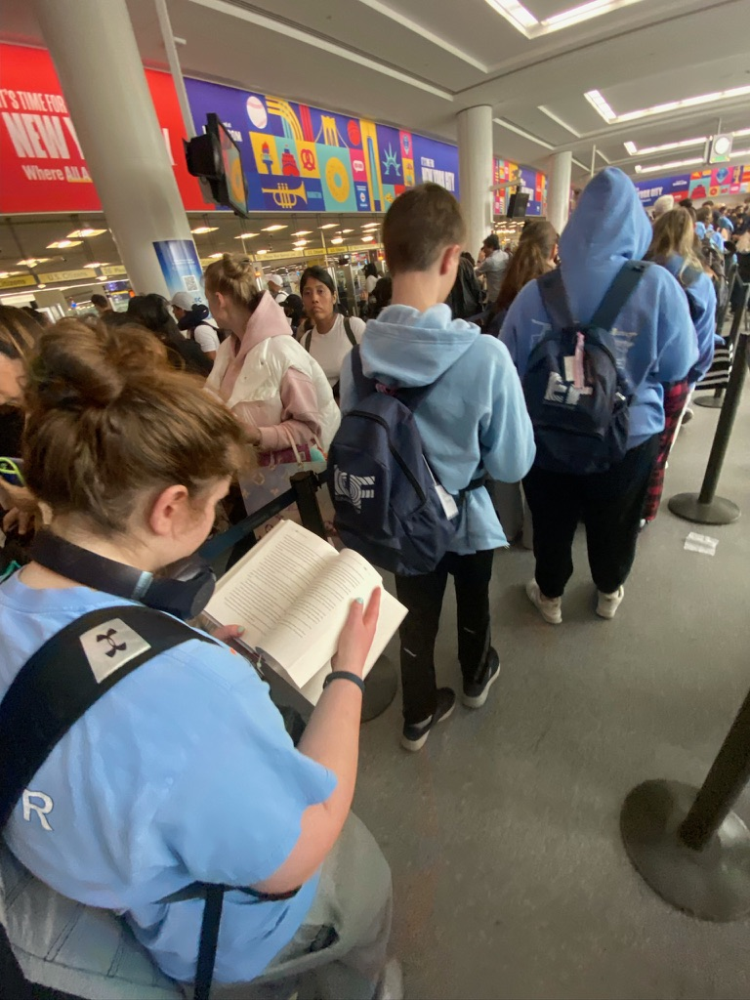
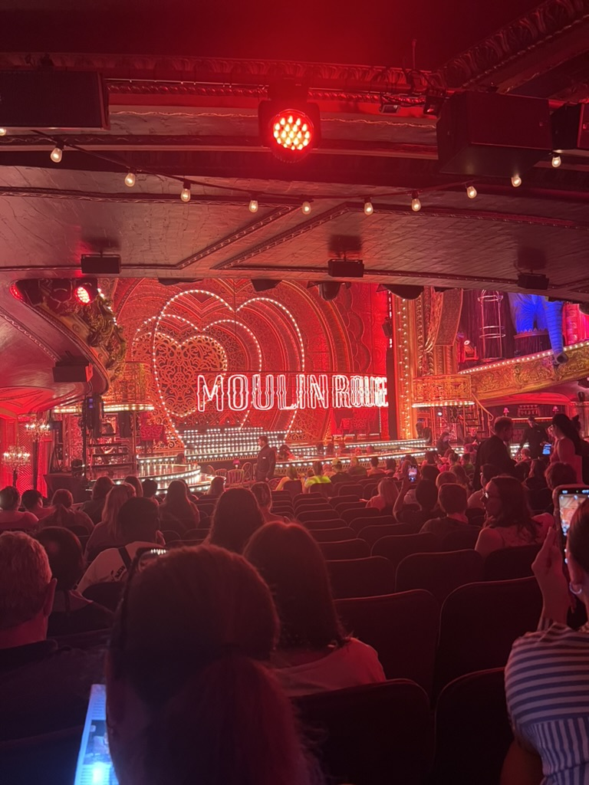
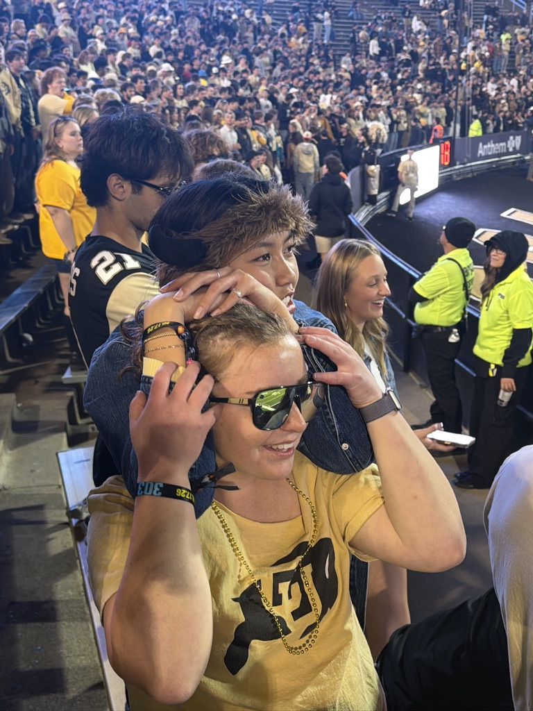

CU Boulder
Creative Technologist

CU Boulder
Creative Technologist

I love reading and am a huge book nerd. Last year I read over 75 books. I am frequently caught reading in places that don't make sense like a TSA line!

I grew up going into the city monthly where I developed an addiction to Broadway shows. Moulin Rouge is a big one as I have seen the show 8 times on Broadway!

Huge sports fan here. I root mainly for CU football (SKO BUFFS), Yankees, Knicks, and the Isles! Go New York Go! If you see me at a game I most likely will be stressed and biting my nails!